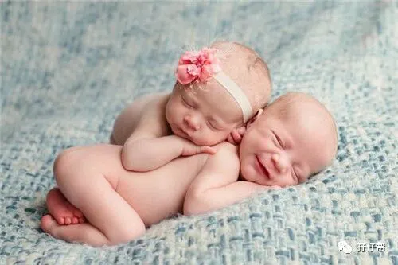

我揪着一颗心
整夜都闭不了眼睛
为何你们明明想睡
却又不肯睡
听…宝宝们哭的声音
叹惜着谁又拉了臭臭
却还在哼哼唧唧
一定不是我
至少我很冷静
可是泪水，就连泪水
也都不相信…
听…宝宝们哭的声音
宝宝们未免也太矫情
悲泣到天明
-----改编自张惠妹《听海》
文|圆圈妈，一个文思如尿崩的双胎妈妈
图|来自网络，如有侵权，请联系删除
· 正 · 文 · 来 · 啦 ·
上几期文章都是写双胞胎宝宝的睡眠攻略，今天来关注下双胞胎父母的睡眠问题。
我觉得吧，双胞胎父母的睡眠问题主要有两种情况，拼凑式睡眠和强迫性失眠.
拼凑式睡眠，大多发生在孩子1岁前。
主要是两宝宝人小事多，一会要喝奶，一会要换尿布，一会肠绞疼…
每天晚上夜醒五六次几乎是常态，甚至看着闹钟从凌晨一点钟转到五点钟…
强迫性失眠，大多发生在孩子2岁左右。
主要是两孩子戒掉夜奶了，摘掉尿不湿了,几乎跟成人的睡眠同步了…
我们突然闲下来了，可是睡眠机制被长期的缺觉打乱了，等到终于可以睡了却彻底失眠了。
【01】拼凑式睡眠
如果你此刻属于第一种，那我给你支两招，有没有效，见仁见智。
Ⅰ 人力资源最优化
大人的睡眠状况跟照顾两宝宝的人员分配有密切联系 ，且看详情。
☞☞3人以上：宝妈负责喂母乳，最好同时一起喂，如果技术不行，那先喂一个，另一个稍后也没关系。
其他人员别急着起床围观，先看是否需要协助，若不需要，就在宝妈喂奶期间继续睡一会儿，宝妈喂完后，把两宝宝交给另两人就可以睡觉了。
另两人负责给两宝宝拍嗝哄睡，直到两宝宝重新睡下…
☆☆我家的情况参考：当圆圈兄弟半夜哭醒吵奶喝，爷爷去冲奶粉，奶奶负责安抚，接着一人抱着一个喂奶。
我和圆圈爸在他们喂奶期间继续睡，等圆圈喝完奶后就把两宝宝接过来，一人一个抱着拍嗝哄睡，让爷爷奶奶休息。
☞☞只有2个人：宝妈辛苦点，做主力军，喂奶事宜自己搞定，不用旁人帮忙，主要是让对方能多睡一会儿。
另一人等宝妈喂完奶之后，负责搞定两宝宝的拍嗝哄睡…此时可能需要些辅助神器，如摇篮或摇床等，具体按各自家庭所需。
☆☆我家的情况参考：当圆圈满5个月后，考虑到我们白天上班比较轻松，但圆圈爷爷奶奶却必须像陀螺一样不停地围着他们哥俩转，他们晚上更加需要充足的睡眠才能应付白天的恶战。
因此，我和圆圈爸轮流上岗守夜，一人负责上半夜，另一人负责下半夜，目的就是让老人家晚上睡好点。
☞☞只有1个人：这个真没办法搞！如果你能一人搞定两宝宝的吃喝拉撒睡的同时还能让自己睡好，那请别犹豫了，女神，请收下我的膝盖吧。
在两孩子不能睡整夜觉之前，都建议你别这样累着了。
列宁说：“不会休息的人，就不会工作。”
圆圈妈说：“睡觉是为了更好地养娃！”
只有大人休息好了！
才能以最好的精神状态去从容应对两宝宝的各种高需求，
才有资格去谈什么从容淡定育儿，
才能人前欢笑地发朋友圈“双胎育儿痛并快乐着”这些鬼话！
不然，就是耍！流！氓！
除了喂母乳，照顾孩子，你还有更重要的事情，那就是让自己睡好！
快去把宝爸踹醒吧。
孩子，他也有份儿的！
Ⅱ 切勿过早睡训
有些父母觉得，趁宝宝小，白纸一张，可塑性强，为了培养宝宝自主入睡的习惯，于是就想尽办法找来各种婴幼儿睡眠大法试图把“睡渣宝宝”训练成“睡美人”。
我觉得有点拔苗助长的意思！
美其名曰为了锻炼两宝宝的自主睡觉能力，但最终目的不过是拯救自己早日脱离拼凑式睡眠。
扪心自问，你的出发点是为两宝宝好还是自己的一厢情愿？
小婴儿的睡眠自有天性，若人为太多的干预或是不科学不切实际的固定模式，怕是会适得其反！
若是遭遇高需求宝宝，你连拼凑式睡眠都没机会了。
须知道，对两个尚未准备好睡训的小婴儿进行睡眠训练不会比频繁夜醒喂奶换尿布轻松到哪里去，甚至可能难上加难！
说吧，机智如你选哪个？
的确，睡训想法不错！但请不要太早！
个人建议3个月后，当然可以提前推后，视宝宝情况而定，再决定是否开始睡训。
【02】强迫式睡眠
其实我们都清楚睡眠的重要性，并不想熬夜，但是却被过去一年甚至两年那段“白天不懂夜的黑”给硬生生逼出一个失眠症。
以下这个新闻，你看了吗？
浙江一位27岁二胎妈妈在通宵玩手机之后，因过度疲劳，突发心源性疾病而猝死。
很多人指责这个妈妈为什么有机会睡觉却偏偏要熬夜玩手机。
其实作为双胞胎父母的你，一定对这位妈妈的做法不陌生，有孩子之后就彻底爱上了熬夜。
这其中原因，天知地知你知我知，唯独娃娃们不知！
在两孩子出生后的头一年，几乎没有睡过整夜觉，这个娃尿醒，好不容易哄睡，那个娃又饿醒了，即便是两个都睡了，还总是担心他们会吐奶窒息，于是就睁一只眼闭一只眼地守着…
据说，饿过头了反而吃不下，睡觉也是如此。
长期的缺觉已经把我们的睡眠细胞杀死了，等到终于有机会睡了却怎么都睡不着了。
失眠后的你想什么呢？
可能你还在想，刚才跟公婆撕逼的时候发挥得不够好，琢磨着下次如何漂亮地怂回去。
可能你还在想，房子小了，开支大了，票子少了，媳妇不可爱了…愁啊…
不想了！反正睡不着，看手机吧。
奶嘴被咬破了，要重新买一个，尿不湿好像有拼团，挺便宜的，要赶紧抢…
王者荣耀好久不见了，赶紧来几把，上次的联赛直播没赶上，看下录播也不错…
虽然怂公婆，愁票子很重要，但是睡眠诚可贵，生命大过天啊！
别忘了还有两个嗷嗷待哺的孩子等着你去伺候。
为了避免出现这种强迫式睡眠而难以调整，建议你在有睡眠障碍的苗头时就采取预防措施，莫让拼凑式睡眠无底线发展下去。
比如，死皮赖脸地多让家人帮忙带孩子吧，或者拿一沓钞票砸给家政人员：“两孩子给我看好咯，我不要钱，我只要觉！”
比如，允许自己无下限地懒惰：尿布没搓，奶瓶没消毒，地板没拖，衣服没洗….都TM 一边去，睡觉要紧！
也许你习惯了整夜觉，对拼凑式的睡眠不屑一顾，且慢！你眯一会和不打盹，完全是两码事。
讲真，照顾两个宝宝，没有哪个不缺觉的！你…只能见缝插针，能睡一点是一点。
可能你向来浅睡，被吵醒后就很难继续入睡了，那建议你躺下闭目养神吧，总好过你一人盯着窗外，“暗爽”到天明。
总之，娃睡了，你也放心睡吧，别再突然一个激灵醒来就去探一探两宝宝的鼻息。
（你这二货！跟我一样！哈哈…）
【03】我的睡眠遭遇
我只经历过拼凑式睡眠，而且不算太严重，因为我有一个非猪一样的队友。
我饭可以不吃，手机可以不看，身上的肉也可以割走，就是不能不让我睡觉。
某个月黑风高的晚上，婆婆看到只有圆圈爸一人抱着娃在哄睡，而我居然摆着大字型睡得爽歪歪。
她心疼儿子和孙子，总是拐弯抹角说我不应该睡太多，我每次都苦笑，丢给她一个“谢谢提醒，BUT你不懂！”的眼神。
感谢圆圈爸，只有他懂！
圆圈爸为何宁愿辛苦自己也不会打扰我睡觉，是因为他很清楚，在这个屎尿屁横流的阶段，只有母爱才能让生活沿着正常轨道行驶...
而母爱需要从容，只有妈妈睡好了，心情舒畅了，才能对生活充满信心和热情，整个家庭才会温馨愉悦，而只有家庭和睦了才能让两宝宝吃好睡好，身体棒棒，健康成长。
在圆圈爸的心里有一个不成文的公式，
老婆睡得好=老婆心情好=大家才有好日子过
这…婆婆是体会不到的！
最后，改编一段马尔克斯《百年孤独》中的一段经典句子。
过去都是假的，回忆没有归路
春天总是一去不复返
最疯狂执着的拼凑式睡眠也终究是过眼云烟
祝愿全天下的双胞胎爸爸，双胞胎妈妈，双胞胎宝宝都一觉好梦！晚安！
-END-
重磅互动
#你希望写什么育儿经验干货？#
评论区聊一聊
随便提，万一下篇就写了呢？
关于这个号
谢谢关注！
我是圆圈妈
85后，全职妈妈
家有孖仔两枚，圆圈&圈圈
双胞胎育儿公众号：孖仔帮
ID:twinsbang
旨意分享双胞胎育儿经验帮助双胞胎家庭
有经验可循
有组织可靠
希望我的经验对您有所启发
期待与您一起共享双胞胎育儿经
孖仔帮目前有5个双胞胎微信社群
孕期群，喂养群，闲置群
爸爸群，教育群
如需入交流群
添加微信号sgguy-com
或扫描下方二维码⬇⬇
申请入群
入群暗号：双胎宝妈/宝爸，孕期/已生
往期回顾
105：同卵双胞胎的天敌--双胞胎输血综合征
106：官宣：双绒双羊，单绒双羊，单绒单羊傻傻分不清？一篇消除你所有疑问
215：双胎子宫日记系列|（下）你看不看？双胞胎妈妈直播剖腹产全过程
306：真人示范！双胞胎妈妈高难度喂母乳技巧
312：为出生就进NICU的双胞胎新生儿，我必须告诉你这5个通关秘籍
407：嘿！双胞胎孩子的亲子阅读攻略，要来一份吗（1--2岁阶段）
605：看过这份最简单的双胞胎宝宝用品囤货清单，其他的都是将就
608：听说...你在找双胞胎育儿神器，这事儿我熟！
723：双胎妈妈，为什么我不建议你这样坐月子...
⬇⬇长按下方二维码，关注孖仔帮
回复文章编号数字即可阅读
更多养育双胞胎知识，尽在双胞胎育儿网站
请猛戳 "阅读原文"
或长按下方二维码直达⬇⬇
点击“阅读全文”，直达双胞胎育儿网站


